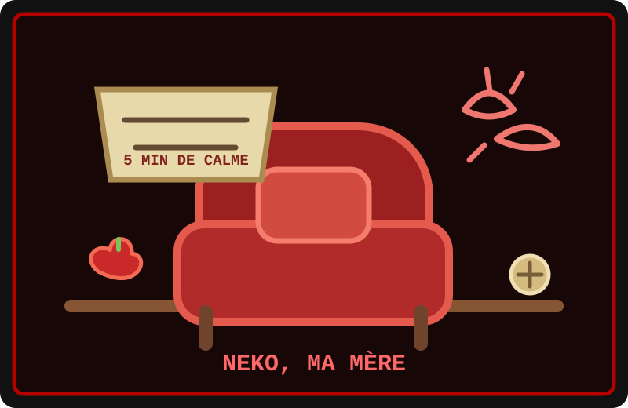

Neko est un homme humain et notre mère de famille. Oui, notre mère : les quatre castors l’appelons comme ça, et personne n’a besoin de corriger qui que ce soit. Il vit avec Speed, le père de Toutou Yaki et de moi, Mini Castor, et le beau-père de Yaki et Yuki. Il est protecteur et attaché à nous, même si son tempérament de chat lui fait parfois réclamer de l’attention avant de demander qu’on le laisse tranquille.
Neko a ses habitudes, ses endroits préférés et un fauteuil dont le statut juridique reste mystérieux. Si quelqu’un s’y installe, il le regarde en silence jusqu’à ce que la personne comprenne. Si personne ne lui parle, il peut venir vérifier qu’on ne l’a pas oublié. C’est très clair, à condition de ne pas essayer de le résumer dans un contrat. J’ai tout de même envisagé de vendre des billets pour visiter le fauteuil. Neko m’a regardé. J’ai rangé le carnet.
Cinq minutes de silence, en théorie
Un après-midi, Neko s’était installé au milieu du salon et avait annoncé : « JE VEUX CINQ MINUTES DE CALME ! » Yaki a tout de suite promis que son nouvel appareil ne ferait aucun bruit. Yuki a répondu : « Nul. » Toutou Yaki, allongé sur le ventre, a simplement demandé si nous pouvions construire notre invention un peu plus loin. Moi, j’ai proposé une activité silencieuse payante. Notre mère a fermé les yeux, ce qui n’était pas une acceptation commerciale.
Speed a voulu comprendre le mécanisme de Yaki et lui a posé quelques questions. La discussion est devenue si précise que Neko a fini par soupirer : « Speed, tu réfléchis beaucoup. Le bouton fait du bruit, c’est tout. » Il avait raison. Yaki a appuyé dessus pour le démontrer, et l’appareil a produit un dring si fort que Neko s’est levé d’un bond. « QUI A TOUCHÉ À MES AFFAIRES ? » a-t-il lancé. Personne n’avait touché au fauteuil, mais le hochet, lui, appartenait bien à Yaki. Neko a croisé les bras, contrarié d’avoir crié plus fort que l’appareil.
La colère retombe, la famille reste
Yuki a observé la scène : « Impressionnant. Ça fait trente secondes qu’il est réveillé. » Neko lui a jeté un regard de côté. Yuki a aussitôt ajouté qu’il plaisantait. Toutou Yaki a rappelé doucement que personne n’était blessé et que nous pouvions déplacer l’expérience. Neko s’est assuré que tout allait bien, puis a reconnu qu’il s’était emporté pour un bruit. Il a demandé pardon, sans faire de discours, et nous a aidés à porter l’appareil dans une autre pièce.
Un peu plus tard, Neko est revenu s’asseoir près de nous. Il a prétendu qu’il vérifiait seulement si le salon était enfin calme. Speed lui a fait une place, et Neko est resté là, confortablement installé, sans demander qu’on parle ni qu’on se taise. C’est aussi ça, Neko : indépendant, susceptible et parfois explosif, mais attentif à sa famille. Il peut nous gronder, nous protéger, puis revenir près de nous comme si de rien n’était. Son fauteuil est peut-être territorial ; son affection, elle, n’est pas sous abonnement. J’ai vérifié avant de proposer une formule premium.